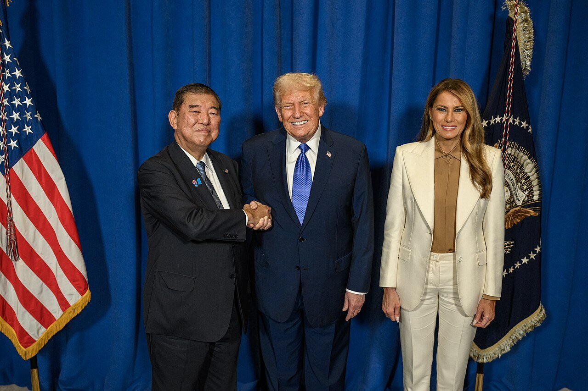
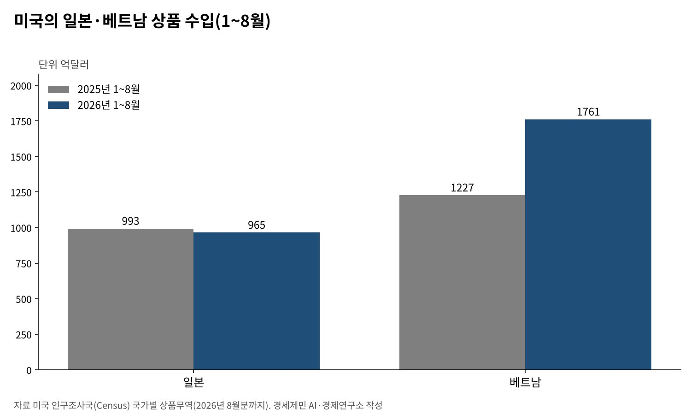
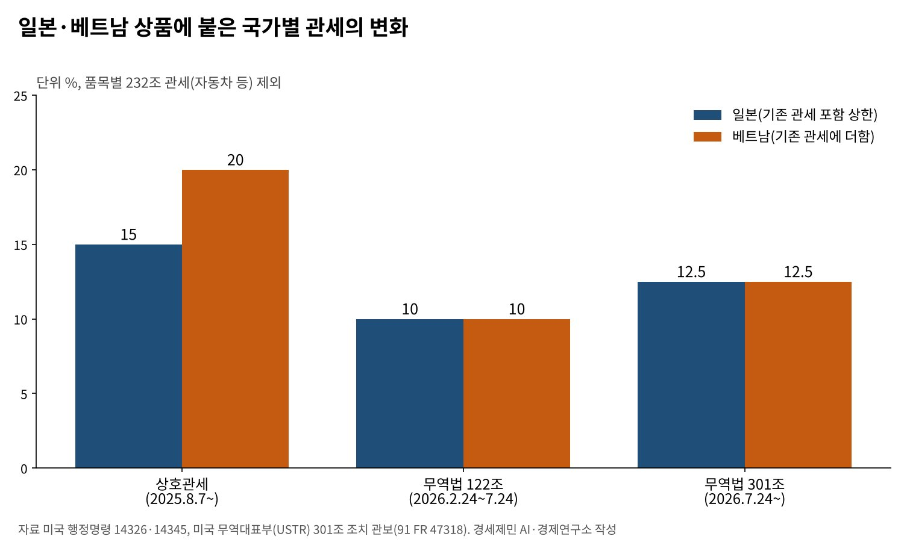

[트럼프 관세전쟁②] 일본과 베트남은 왜 그래야만 했을까
일본은 5500억달러 투자로 15% 상한을 얻었고, 첫 사업 360억달러가 정해졌다
베트남은 20%와 환적 40%를 받아들였지만 1년이 넘도록 협정에 서명하지 못했다
대법원 판결 뒤 두 나라 관세는 12.5%로 모였고, 베트남산 수입은 오히려 43% 늘었다
AI경세제민=김갑봉 기자 | 2025년 7월 일본과 베트남은 미국의 관세 요구를 먼저 받아들였다. 일본은 대미 투자 5500억달러를 약속했다. 베트남은 20% 관세와 환적 상품 40% 관세를 받아들였다. 이 글은 그때 두 나라가 왜 그래야만 했는지 물었다.
한 해가 지나 결과가 나왔다. 일본의 약속은 미국 행정명령과 투자 사업으로 굳었다. 베트남은 기본 틀에 합의했지만 10월 초까지 협정에 서명하지 못했다. 그사이 미국 대법원은 상호관세를 무효로 했다.
두 나라의 선택이 무엇을 남겼는지 미국 정부 문서와 무역 통계, 연준 연구로 따진다. 한국이 읽어야 할 교훈도 함께 짚는다.
일본, 투자 약속을 행정명령으로 굳혔다
트럼프 대통령은 2025년 9월 4일 행정명령 14345호에 서명해 일본과의 합의를 시행했다. 일본 상품의 기존 관세가 15%보다 낮으면 기존 관세와 추가 관세를 합해 15%로 맞췄다. 기존 관세가 15% 이상이면 더 붙이지 않았다.

관세를 겹쳐 쌓지 않고 15%를 상한으로 둔 셈이다. 8월 7일 들어온 상품부터 거슬러 적용했다. 자동차와 부품 관세도 25%에서 15%로 내려 9월 16일부터 적용했다. 행정명령은 일본 정부가 5500억달러를 미국에 투자하기로 했다고 적었다.
투자처는 미국 정부가 고른다. 미국 상무부는 2026년 2월 17일 첫 세 사업을 발표했다. 오하이오주 9.2기가와트 가스발전 시설, 멕시코만 원유 수출 시설, 합성 다이아몬드 공장이다. 세 사업의 규모는 360억달러다.

베트남, 20%와 환적 40%를 받아들였다
트럼프 대통령은 2025년 7월 31일 행정명령 14326호로 나라별 상호관세율을 다시 정했다. 베트남은 20%다. 다른 나라 상품을 베트남을 거쳐 들여오는 환적 상품에는 40% 관세를 따로 매기게 했다.
이웃 나라도 비슷한 줄에 섰다. 같은 행정명령은 태국·말레이시아·캄보디아·인도네시아·필리핀에 19%를 매겼다. 대만은 20%, 인도는 25%였다. 베트남은 이웃보다 1%포인트 높은 자리에서 생산기지 매력을 지켰다.
두 나라는 2025년 10월 26일 상호무역협정 기본 틀을 담은 공동성명을 냈다. 미국은 20%를 유지하되 일부 품목은 0%를 검토하기로 했다. 베트남은 미국 공산품과 농산물에 시장을 넓히고 보잉 항공기 50대를 사기로 했다.
몇 주 안에 마치겠다던 서명은 해를 넘겼다. 또 럼 베트남 공산당 서기장 겸 국가주석은 2026년 9월 21일 뉴욕에서 제이미슨 그리어 미국 무역대표를 만났다. 베트남 외교부는 10월 1일 정례 브리핑에서 아직 협상 중이라고 밝혔다.
베트남 산업무역부는 10월 7일 협상을 기본적으로 마쳤다고 밝혔다. 기술적 쟁점 몇 가지만 남았다고 했다. 서명 날짜는 내놓지 않았다.
대법원 판결 뒤 두 나라 관세는 12.5%로
2026년 2월 20일 미국 대법원은 국제비상경제권한법(IEEPA)이 관세 권한을 주지 않는다고 판결했다. 이 법에 기댄 상호관세가 무효가 됐다. 같은 행정명령에 든 환적 40% 조항도 기댈 곳을 잃었다.
두 나라 상품에는 2월 24일부터 7월 23일까지 무역법 122조 관세 10%가 붙었다.
7월 24일부터는 무역법 301조 관세다. 미국 무역대표부(USTR) 관보를 보면 일본 상품은 기존 관세와 합해 12.5%가 되도록 매긴다. 기존 관세가 12.5% 이상이면 더 붙이지 않는다. 베트남 상품에는 기존 관세 위에 12.5%를 그대로 더한다.

품목별 관세는 따로 남았다. 무역법 232조에 따른 자동차 관세는 대법원 판결과 상관없이 유지된다. 일본산 자동차는 15%를 낸다. 일본이 투자 약속으로 얻은 것 가운데 가장 오래 남는 성과가 이 자동차 관세다.
관세보다 컸던 공급망의 힘
무역 통계는 다른 이야기를 한다. 미국 인구조사국 자료로 2026년 1~8월 미국의 일본 상품 수입은 965억달러다. 1년 전 993억달러보다 2.8% 줄었다. 같은 기간 베트남 상품 수입은 1227억달러에서 1761억달러로 43.5% 늘었다.
베트남과의 상품무역 적자는 2024년 1232억달러에서 2025년 1783억달러로 커졌다. 20% 관세를 매긴 나라에서 들여오는 물건이 오히려 더 늘었다. 관세율 차이보다 공급망을 옮겨 온 힘이 컸다.
연준 이사회 연구진은 7월 낸 연구에서 그 힘의 출처를 짚었다. 베트남의 대미 수출에서 중국계 투자기업 몫이 2018~2019년 11%에서 2020~2023년 25%로 늘었다. 베트남의 중국계 투자기업은 2018년 1287곳에서 2023년 2864곳으로 늘었다.
같은 연구는 베트남을 거친 단순 환적은 양이 크지 않다는 앞선 연구를 들었다. 미국이 의심한 것은 라벨만 바꾼 환적이었다. 실제로 일어난 일은 중국 기업이 베트남에 공장을 세운 생산 이전이었다.
두 나라가 그래야만 했던 까닭
일본은 미국 시장과 안보를 함께 기댄다. 관세를 맞받아칠 수 없는 나라는 돈으로 시간을 산다. 일본이 내민 투자 약속은 관세 상한과 자동차 관세 인하로 돌아왔다. 다만 투자처를 미국이 고르는 구조는 그대로 남았다.
베트남은 미국 수출에 기대고 중국 부품에 기댄다. 환적을 막겠다는 미국 요구를 받아들이지 않으면 생산기지 매력을 잃는다. 베트남은 비슷한 처지의 이웃보다 조금 높은 관세를 받고 시장을 지켰다.
두 나라 모두 맞서기보다 먼저 합의하는 길을 골랐다. 법원 판결로 관세 숫자는 바뀌었지만 투자와 시장 개방 약속은 남았다. 관세는 법정에서 되돌릴 수 있어도, 상대국이 내준 약속은 쉽게 돌아오지 않는다.
한국이 읽어야 할 것
첫째, 관세율보다 산정 방식이 중요하다. 일본은 기존 관세를 포함한 상한을 얻어 관세가 겹쳐 쌓이는 것을 막았다. 한국도 같은 방식을 얻었다. 새 301조 관세가 더해질 때도 이 원칙이 지켜지는지 따져야 한다.
둘째, 투자처를 누가 고르는지가 중요하다. 일본의 첫 사업은 미국 정부가 발표했다. 투자가 미국의 전력·에너지 수요에 맞춰 흐른다. 한국 투자가 국내 산업의 공급망과 이어지려면 사업 선정에 한국의 목소리가 들어가야 한다.
셋째, 관세는 공급망을 다 막지 못한다. 베트남 사례가 보여 주듯 생산은 관세가 낮은 곳으로 옮겨 간다. 한국 기업의 생산 배치는 관세율 한 번의 숫자가 아니라 미국 규칙이 얼마나 오래 갈지를 보고 짜야 한다.
일본은 돈으로, 베트남은 공급망으로 버텼다. 두 나라 모두 관세의 숫자보다 미국 시장에 남는 길을 골랐다. 관세의 법적 근거는 1년 사이 세 가지 법을 오갔다. 흔들리는 규칙 앞에서 오래 버티는 쪽은 공급망을 쥔 쪽이다.
참고문헌
기관 자료
- 미국 백악관, Executive Order 14345 「Implementing the United States-Japan Agreement」, 2025년 9월 4일(미국 정부 출판국 게재). https://www.govinfo.gov/content/pkg/DCPD-202500893/html/DCPD-202500893.htm
- 미국 백악관, Executive Order 14326 「Further Modifying the Reciprocal Tariff Rates」, 2025년 7월 31일(아메리칸 프레지던시 프로젝트 게재). https://www.presidency.ucsb.edu/documents/executive-order-14326-further-modifying-the-reciprocal-tariff-rates
- 미국 상무부, 「Statement from Secretary Howard Lutnick: MASSIVE AMERICA FIRST TRADE WIN」, 2026년 2월 17일. https://www.commerce.gov/news/press-releases/2026/02/statement-secretary-howard-lutnick-massive-america-first-trade-win
- 미국 무역대표부(USTR), 「Notice of Actions in Section 301 Investigations … Forced Labor」, 미국 관보 91 FR 47318, 2026년 7월 28일. https://www.federalregister.gov/documents/2026/07/28/2026-15181/notice-of-actions-in-section-301-investigations-of-acts-policies-and-practices-of-various-economies
- 미국 인구조사국, 「Trade in Goods with Japan」, 「Trade in Goods with Vietnam」(2026년 8월분까지). https://www.census.gov/foreign-trade/balance/c5880.html · https://www.census.gov/foreign-trade/balance/c5520.html
- 일본 총리관저 영문 누리집(2026년 10월 20일 열람). https://japan.kantei.go.jp/
연구 논문과 보고서
- Avalos, C. A., Hoang, T., & Van Leemput, E., "Vietnam's Export Boom to the U.S.: The Role of Chinese Firms", FEDS Notes, 연준 이사회, 2026년 7월 17일. https://www.federalreserve.gov/econres/notes/feds-notes/vietnams-export-boom-to-the-u-s-the-role-of-Chinese-firms-20260717.html
- Ropes & Gray, 「Supreme Court Strikes Down IEEPA Tariffs: Key Takeaways and Implications for Importers」, 2026년 2월. https://www.ropesgray.com/en/insights/alerts/2026/02/supreme-court-strikes-down-ieepa-tariffs-key-takeaways-and-implications-for-importers
- EY, 「USTR finalizes Section 301 forced labor tariffs on 60 economies」, 2026년 7월. https://taxnews.ey.com/news/2026-1607-ustr-finalizes-section-301-forced-labor-tariffs-on-60-economies-additional-tariffs-of-10-percent-or-125-percent-take-effect-24-july-2026
언론 보도
- "US – Japan Agreement Implementation: Trade Agreement and Tariff Modifications", C.H. 로빈슨 고객 공지, 2025년 9월 17일. https://www.chrobinson.com/en-sg/resources/insights-and-advisories/client-advisories/2025q3/09-17-2025-client-advisory-us-japan-agreement-implementation-trade-agreement-tariff-modifications/
- "US and Japan Unveil First Projects Under $550B Trade Deal", TED Magazine, 2026년 2월 18일. https://tedmag.com/us-and-japan-unveil-first-projects-under-550b-trade-deal/
- "Công bố Tuyên bố chung về Hiệp định thương mại đối ứng Việt Nam - Mỹ", Mekong ASEAN, 2025년 10월 26일. https://mekongasean.vn/cong-bo-tuyen-bo-chung-ve-hiep-dinh-thuong-mai-doi-ung-viet-nam-my-47883.html
- "Vietnam And US Announce Framework Agreement For Reciprocal Trade", Vietcetera, 2025년 10월. https://vietcetera.com/en/vietnam-and-us-announce-framework-agreement-for-reciprocal-trade
- "Bộ Ngoại giao thông tin về việc Việt Nam và Mỹ ký Hiệp định thương mại đối ứng", 국제신문(Báo Quốc tế), 2026년 10월 1일. https://baoquocte.vn/bo-ngoai-giao-thong-tin-ve-viec-viet-nam-va-my-ky-hiep-dinh-thuong-mai-doi-ung-450701.html
- "Việt Nam - Hoa Kỳ: Cơ bản hoàn tất đàm phán hiệp định thương mại đối ứng", VTV, 2026년 10월 8일. https://vtv.vn/viet-nam-hoa-ky-co-ban-hoan-tat-dam-phan-hiep-dinh-thuong-mai-doi-ung-100261008094157769.htm
[사진 출처]
- [사진1] 일본 내각홍보실, "Prime Minister Ishiba’s Attendance to a Reception hosted by U.S. President Trump and First Lady Melania Trump.jpg", 위키미디어 공용, 퍼블릭 도메인. https://commons.wikimedia.org/wiki/File:Prime_Minister_Ishiba’s_Attendance_to_a_Reception_hosted_by_U.S._President_Trump_and_First_Lady_Melania_Trump.jpg
※ 이 기사는 AI 프로그램 클로드를 활용해 작성했습니다.
관련기사
- [트럼프 관세전쟁①] 트럼프 관세압박, 미국이라고 다 유리할까
- [트럼프 관세전쟁③] EU는 왜 어떻게 15%를 수용했나
- [트럼프 관세전쟁④] 「나머지는 15~20%」 발언과 한미 관세협상
- [트럼프 관세전쟁⑤] 한미 관세협상과 환율 방어
저작권자 © AI경세제민 무단전재 및 재배포, AI학습 및 활용 금지